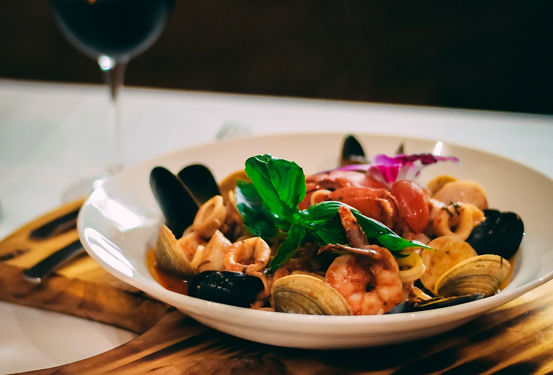
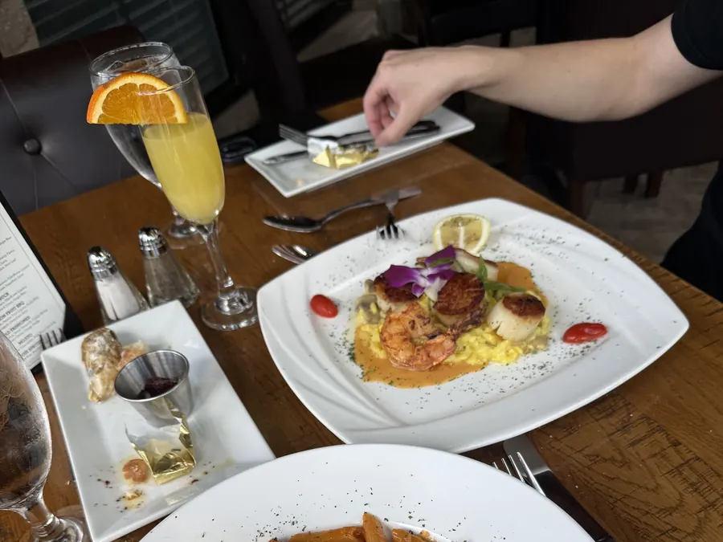
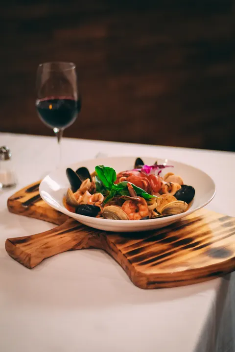
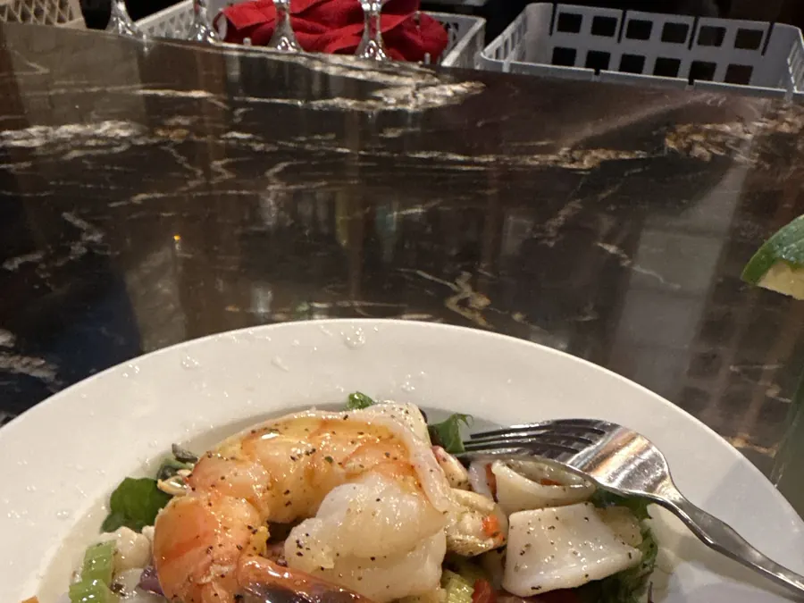
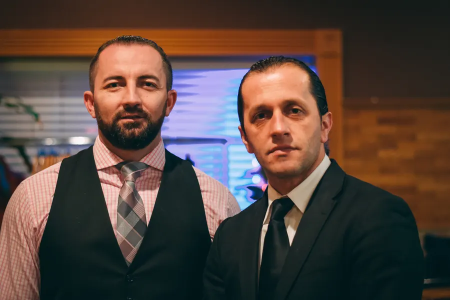
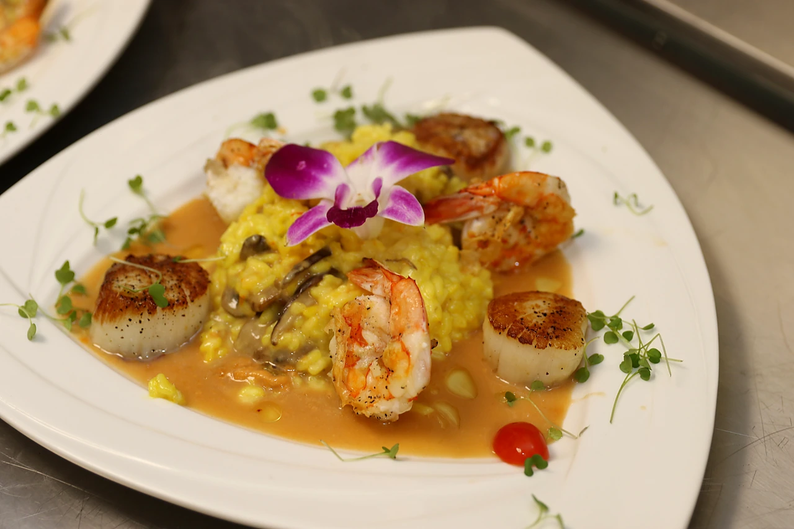
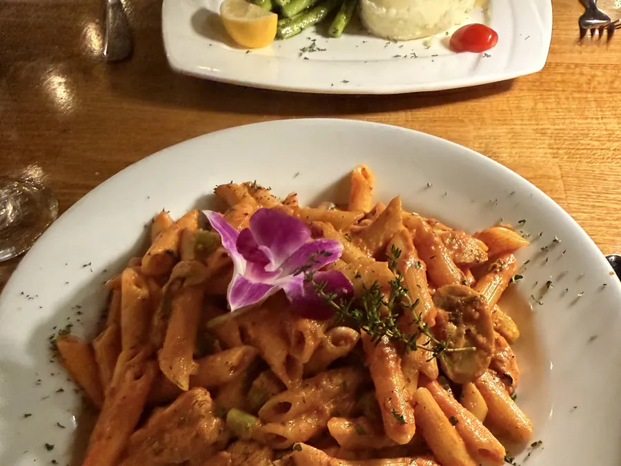
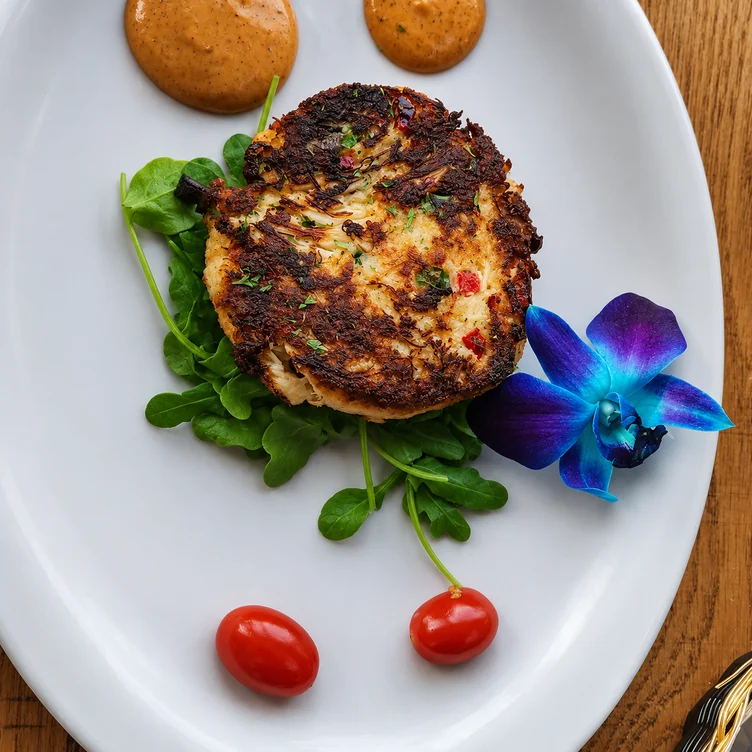
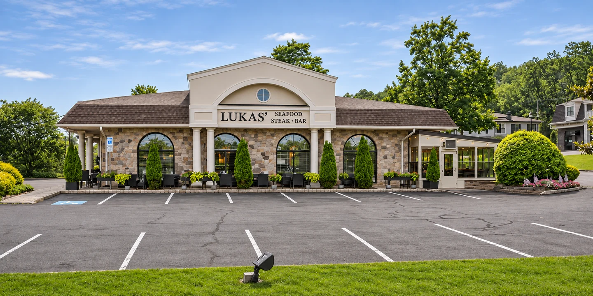

Seafood & raw bar
Blue Point oysters, garlic shrimp and New England clam chowder.
Warren, New Jersey
Seafood, steaks and cocktails.


Blue Point oysters, garlic shrimp and New England clam chowder.

Explore the steak and chop selections for dinner.

Lunch, cocktails and wine at the full bar.
A look at a few of the plates guests order most — the whole menu is on the menus page.

Shrimp, clams, mussels and oysters, served cold with lemon and horseradish.

A smooth lobster bisque, finished with a piece of lobster.

Mushroom and asparagus risotto, roasted red pepper sauce.

Cipollini onion, mashed potato.

USDA Prime, broiled to perfection and served sizzling on a 500° plate.

Pan seared truffle oil, wild mushroom risotto, lobster brandy sauce.



Our story
Sonny, Johnny and Roberto, and a close family friend, came together to bring Central New Jersey the freshest seafood and the finest meats. Lukas’ is the fourth restaurant they have opened together, and it carries the same idea they have always cooked from: only a truly authentic taste of Mediterranean cooking and culture gives a guest an incomparable dining experience.
Also from the family: La Colina Mexican Cantina in Warren and Cranford, Ocean Prime Tavern in Cranford, and Troy’s Firehouse Italian Cucina in Warren.

Private dining & catering
Planning a celebration or group dinner in Warren? Ask about the private dining room. For an event at your own venue, explore catering through ezCater.







Dining and gallery photos from the house at 61C Mountain Blvd.
Ratings as published on each platform.

| Monday | 11:30a – 9p |
|---|---|
| Tuesday – Friday | 11:30a – 10p |
| Saturday | 11:30a – 10p |
| Sunday | 11:30a – 9p |
| Weekend brunch | Sat & Sun, 11a – 2p |
Holiday hours may vary — reservations are recommended.